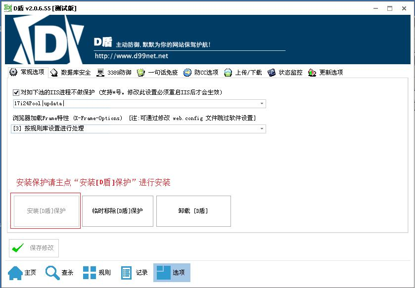
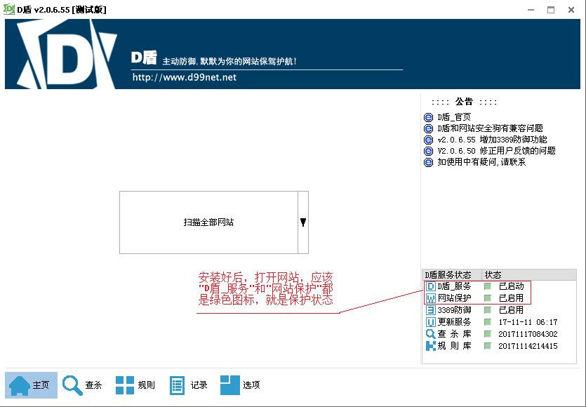
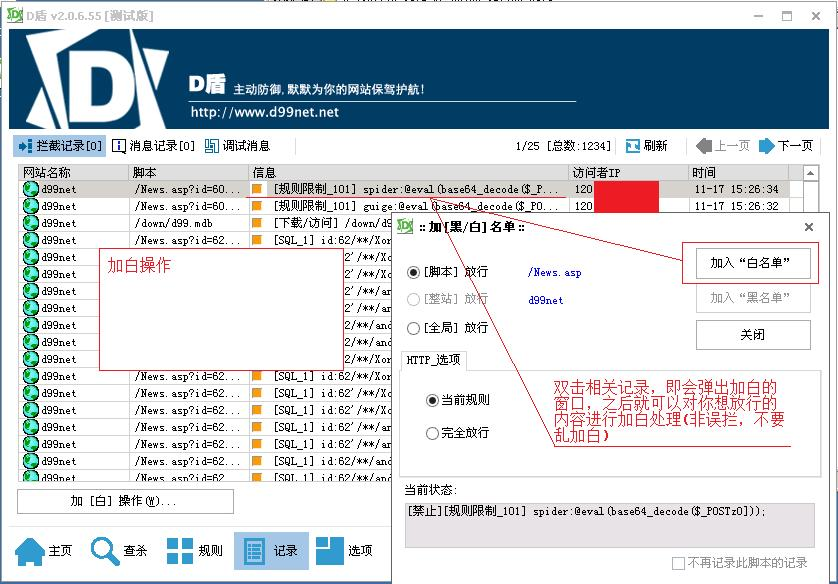

D盾_防火墙专为IIS设计的一个主动防御的保护软件,以内外保护的方式，防止网站和服务器给入侵,在正常运行各类网站的情况下，越少的功能，服务器越安全的理念而设计！限制了常见的入侵方法，让服务器更安全!
1.安装与使用
---------------------------------------------
请解压全部文件到指定目录，如C盘或D盘
例如:d:d_safe 之后运行 "D_Safe_Manage.exe"
D盾程序,如果你的是IIS网站环境,请点击“选项”页里点击按钮“安装[D盾]保护”,进行安装，安装时需要管理员权限.如果你的电脑不是IIS的网站环境，无需安装保护,可当web查杀软件使用。

安装保护后，状态显示

2.误拦的处理
---------------------------------------------
当有误拦时，请到D盾的"记录"里查看，双击误拦记录，会弹出加白的窗口，之后点击 [加入“白名单”]即可放行。

3.移除与卸载
---------------------------------------------
如果你安装过保护，会在开始菜单中生成快捷方式，你可以点击“开始所有程序D盾防火墙卸载_D盾”卸载软件。也可以在 "控制面板程序和功能"里找到“D盾防火墙”进行卸载。
如果你只是解压使用，直接删除D盾相关目录的文件即可。